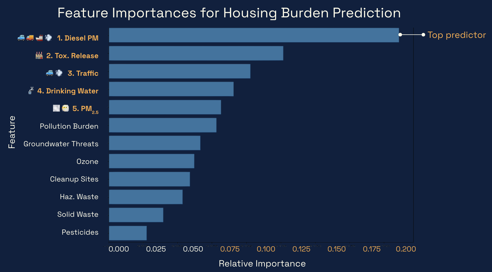

1. Environmental Factors & Housing Burden
FeaturedThe question: How do environmental risk factors and socioeconomic conditions relate across California counties?
What I did
- Cleaned and analyzed 8,000+ environmental and socioeconomic records.
- Explored geographic patterns and relationships between environmental risks and housing burden.
- Created visualizations to communicate county-level trends.
What this demonstrates: Data cleaning, exploratory data analysis, visualization, and the ability to investigate a real-world social issue.
View more on GitHub